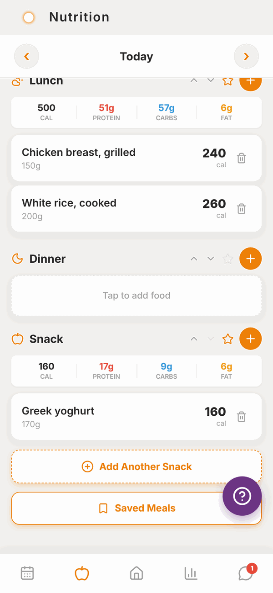
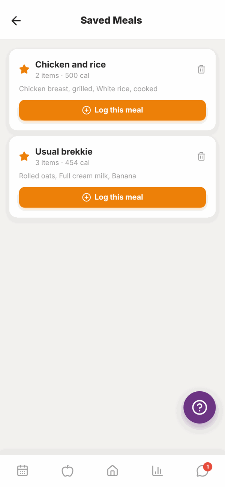
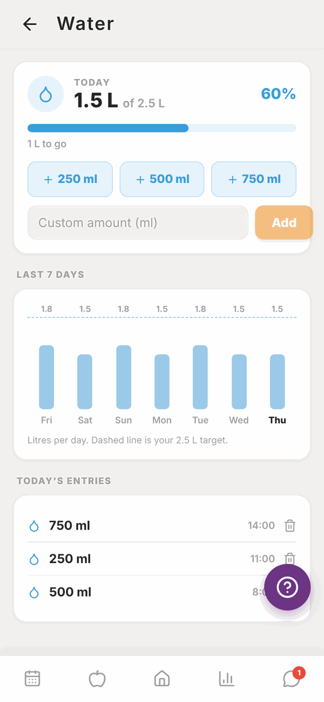

Totality for clients
Saved meals and water
Save a meal you eat often and log it again in one tap, and track how much water you drink.
Saved meals#
If you eat the same breakfast most days, save it once and log the whole thing in one tap.
Save a meal#
- Log the foods into a meal in your food log as normal, for example Breakfast.
- Tap the star on that meal's header.
- Type a name, for example "Usual brekkie".
- Tap Save. You'll see "saved to your meals".

The star is greyed out on a meal with no food in it.
Log a saved meal#
- In your food log, scroll down and tap Saved Meals.
- Find the meal. Each one shows how many items it has, its calories, and the foods in it.
- Tap Log this meal.
- Tap the meal to log it to (Breakfast, Lunch, Dinner or Snack), then Log Meal.
- You'll see "Logged! Meal added to your food log."

The meal is logged to the day you were looking at in your food log. You stay on the Saved Meals screen, so you can log another.
To delete a saved meal, tap the bin button on it and confirm. This doesn't remove anything you've already logged.
Water#
On Home, scroll to MORE and tap Water.

The TODAY card shows how much you've had, out of your daily target (2.5 L unless you've changed it in Totality Nutrition), as a percentage and a bar. Underneath it says how much is left to go, or Target reached. Nice work.
Add water#
- Tap + 250 ml, + 500 ml or + 750 ml.
- Or type an amount into Custom amount and tap Add.
If your units are set to fluid ounces, the buttons show 8 fl oz, 16 fl oz and 24 fl oz instead.
See your week#
Last 7 days shows a bar for each day. The dashed line is your target.
Fix a mistake#
Under Today's entries, tap the bin next to the wrong entry to delete it, then add the right amount. Entries can't be edited, only deleted and added again.
Questions#
How many saved meals can I have?
There's no limit in Totality.
Can I change what's in a saved meal?
Not directly. Log the meal, change it in your food log, then save it again with the star and delete the old one.
Does water I log in Totality Nutrition show here?
Yes. If you use Totality Nutrition with the same account, water from both apps adds up in the same place.
Can I change my water target?
Not in Totality. If you also use Totality Nutrition with the same account, you can change it on the Water screen there, and Totality uses the same target.
Does coffee or tea count as water?
That's up to you and your trainer. Totality just adds up what you log.